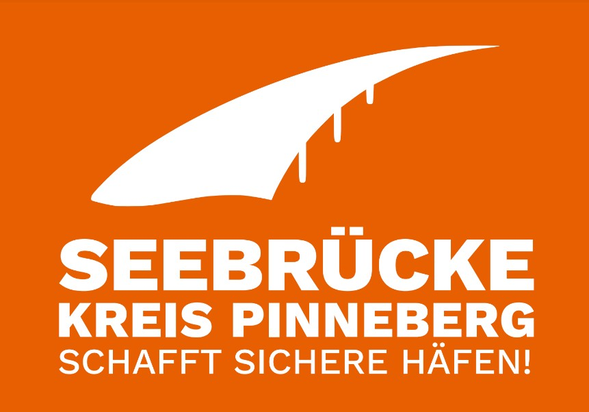

Seebrücke Kreis Pinneberg
ما هي سي بروكة
مجموعة من العديد من اللاجئين - دعت إلى مظاهرات في المدن الألمانية في يوليو 2018.بیشتر بخوانید کمتررتدى المتظاهرون بعض سترات النجاة البرتقالية وعشاق النجاة لرفع الوعي بعملية الإنقاذ والتظاهر من أجل إنقاذ البحر ، بالإضافة إلى طرق الهروب الآمنة وسياسة اللاجئين الإنسانية. كان سبب المظاهرات هو الأحداث المحيطة بإنقاذ "شريان الحياة". وقد استلمت سفينة الإنقاذ في يونيو (حزيران) أكثر من 200 شخص تم إنقاذهم من على متنها عدم وجود تصريح هبوط في البحر الأبيض المتوسط. من بين أمور أخرى ، رفضت مالطا سفن الإنقاذ "شريان الحياة" و "البحر لمشاهدة 3" الخروج من الميناء. بالإضافة إلى ذلك ، يتم تهديد القبطان مع إجراء. لمزید الاطلاع انقر هناتابعونا فی فیسبوک

في تشرين الثاني / نوفمبر ، سنستخدم سترات النجاة ، وزورق الورق والورق للغوص في دائرة بینبرگ في
أورانج ، ولون الإنقاذ البحر! في أربع مدن ، نخطط لإجراءات وحشود فلاش
- في ۳ نومبر فی مرکز مدینه بینبرگ
- في ۱۰ نومبر فی مدینه ودل
- في ۱۷ دسمبر فی مدینه شنفلد
- في ۲۴ دسمبر فی مدینه المسهورن
الوقت الباقی الی موعدنا التالي
فحسب 11 یوما و 23 ساعات و 18
دقائق و 21 ثوان